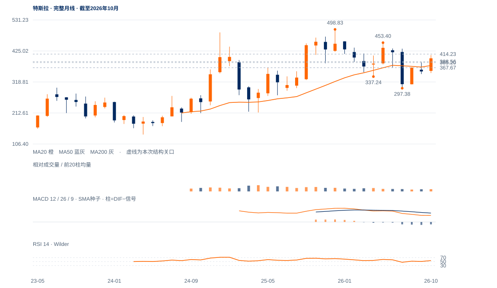

修复延续候选
未来1—5日偏向修复延续并检验401—414供应，385—389保持是基础。
未来1—5日偏向修复延续并检验401—414供应，385—389保持是基础。
未来2—6周偏向修复延伸后检验401—414供应，385—389保持为基础。414.23连续两日收盘通过后，才支持进一步接近453.40；日收破385.20先减弱，原367.67失效标准保留。
未来1—3个月以297—453区间中的重心修复为基准。周收突破453.40并形成较高回测谷，才提高再试498.83判断；若重新周收低于338.15，当前修复的中期意义显著下降，297.38大下沿重新重要。

展开图表 ↗2025年12月498.83后，今年1月458.34、5月453.40均未重夺大高，7月低297.38形成宽区间下沿。10月月收399.81高于10/20月均衡387.65/375.26，当前397.45也在其上，说明长期区间内的修复有基础，但距离突破全年较低高区仍远。
9月384.04之后跌至345.88，10月410.85、11月414.23又转落到338.15，周线内部反复较大。11月11—12日连续收过388.56及各日200日均线，原短线双条件确已通过；其后尚无同级较高低点与再次突破，不能把这次回收直接等同长期趋势反转。
388.56及各日200日均线的原两日回收已确认，380—386上窗口尚未完全回补。414.23是下一层升级关口，453.40仍是全年较低大高。
11日收390.84高于388.56及当日200日线383.03，12日收397.45高于388.56及当日382.86；原连续两日双条件通过。
11日上缺口380.00—386.35，12日低385.20进入但未完全填到380.00，收397.45在其上。12日收盘位置76.5%，向上跟进仍在。
上方10月28日410.85与11月2日414.23仍未突破；12日量比0.71、20日OBV方向余额仅0.015。价格改善成立，但尚未出现与新高扩展匹配的需求证据。
388.56与各日200日线的原两日条件已通过；新升级条件另定为连续两日收过414.23。
日收低于385.20先削弱最新承接，380.00回补边界次之；原367.67日收受损线不替换。
修复量能偏低，完整周线仍受先前回撤影响；若380窗口完全回补后不能回收，已通过的日线条件仍可能失败。
| 周期 | 最后完整柱 | 图示柱数 | RSI14 | ATR14 | MACD柱 |
|---|---|---|---|---|---|
| 日线 | 2026-11-12 | 185 | 56.52335 | 16.56612 | -0.45093 |
| 周线 | 2026-11-06 | 156 | 46.74017 | 35.67882 | 3.25725 |
| 月线 | 2026-10-30 | 96 | 54.69031 | 71.42217 | -8.58781 |
美股价格拆股调整、不含分红再投资。完整周线至11月6日；11月进行中。指数成交量与全成分广度受限。